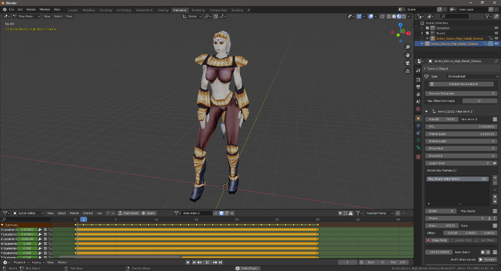

Turok 2 EX Tools v1.4.0 for Blender
By BehemothProgrammer
Download

Latest Release:
All Releases
This is an addon for Blender that allows you to import and export Staticmeshes, Skinnedmeshes, and Animations
from and to Turok 2 EX.
Please read the online documentation for details on
installing, importing, exporting, and editing.

Change Log
Version 1.4.0 (2020-04-14)
- Double click a key frame action item in the list to quickly play audio and voice clips
- Validation now checks to make sure the root bone has a bone index of 0
- User/Script Event Arg 1 will now show the menu button for the list of custom events if there are any.
- The Skinnedmesh animation action UI no longer has a collapsable drop down arrow and it's always shown.
- Removed checking for updates on start up.
- Material cull type "use settings" now exports correctly as back or none depending on the blender material setting.
- The Player Scale Box mesh needed to be scaled by 2.855002 (Turok 2's actor scale) to match the world scale. The option to not scale it is in Blenders register option window in the bottom left by default after you click the button.
- The material panel has a tab menu at the top with 2 items: Settings and Misc.
- The first texture shader node properties are now shown in the material panel.
- The Add Param button in the material panel is now a drop down selection where you can select the 3 common params quickly.
- Changed Shading Panel property "Force Linear Filter" to "Anisotropic Filter"